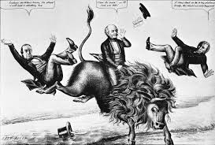
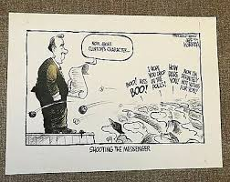

Prresidential Predicaments
Presidential Election Years & Slogans:
Presidential Candidate Slogans
1840
- "Tippecanoe and Tyler Too" - William Henry Harrison
- "Independent Treasury and Liberty" - Martin Van Buren
1844
- "54-40 or Fight" - James K. Polk
- "Reannexation of Texas and Reoccupation of Oregon" - James K. Polk
- "Who is James K. Polk?" - Henry Clay
- "Hurrah! Hurrah! The Country’s Risin’, for Henry Clay and Frelinghuysen!" - Henry Clay
1848

- "For President of the People" - Zachary Taylor
- "The Sub Treasury and the Tariff of '46" - Lewis Cass
1852
- "We Polked you in ’44, We shall Pierce you in ’52" - Franklin Pierce
- "The Hero of Many a Well-Fought Battle" - Winfield Scott
1856
- "Free Soil, Free Men, Fremont" - John C. Frémont
- "We’ll Buck ’em in ’56" - James Buchanan
1860
- "Vote Yourself a Farm" - Abraham Lincoln
- "Vote Yourself a Tariff" - Abraham Lincoln
- "The Union Must and Shall be Preserved" - Stephen Douglas
1864
- "Don’t Swap Horses in the Middle of the Stream" - Abraham Lincoln
- "The Union as it Was, the Constitution as it Is" - George B. McClellan
1868
- "Let Us Have Peace" - Ulysses S. Grant
- "This is a White Man’s Country; Let White Men Rule" - Horatio Seymour
1872
- "Grant Us Another Term" - Ulysses S. Grant
- "Turn the Rascals Out" - Horace Greeley
1876
- "Hayes, Hard Money, and Honest Government" - Rutherford B. Hayes
- "Our Centennial President" - Rutherford B. Hayes
- "Tilden and Reform" - Samuel Tilden
1880
- "From the Tow-Path to the White House" - James A. Garfield
- "Honest Money, Honest Government, and Honest Elections" - Winfield Scott Hancock
1884
- "Blaine, Blaine, James G. Blaine, The Continental Liar from the State of Maine" - Democrats against Blaine
- "Ma, Ma, Where’s my Pa?" - Republicans against Cleveland
- "Public Office is a Public Trust" - Grover Cleveland
1888
- "Protect the American Worker" - Benjamin Harrison
- "We are for Free Trade" - Grover Cleveland
1892
- "Ben Harrison and Protection" - Benjamin Harrison
- "Unnecessary Taxation Oppresses Industry" - Grover Cleveland
1896
- "Patriotism, Protection, and Prosperity" - William McKinley
- "You shall not crucify mankind upon a cross of gold" - William Jennings Bryan
1900
- "A Full Dinner Pail" - William McKinley
- "Equal Rights to All, Special Privileges to None" - William Jennings Bryan
1904
- "A Square Deal" - Theodore Roosevelt
- "Equal Rights to All, Special Privileges to None" - Alton Parker
1908
- "Vote for Taft this Time, You Can Vote for Bryan Anytime" - William Howard Taft
- "Shall the People Rule?" - William Jennings Bryan
1912
- "Don’t Swap Horses While Crossing the Stream" - William H. Taft
- "The New Freedom" - Woodrow Wilson
- "Better a Bull Moose Than a Bull Mouse" - Theodore Roosevelt
1916
- "He Kept Us Out of War" - Woodrow Wilson
- "America First" - Charles Evans Hughes
1920

- "Return to Normalcy" - Warren G. Harding
- "America First" - Warren G. Harding
- "Back to Democracy, Not Autocracy" - James M. Cox
1924
- "Keep Cool with Coolidge" - Calvin Coolidge
- "Keep the White House White" - Ku Klux Klan slogan against Al Smith
1928
- "A Chicken in Every Pot and a Car in Every Garage" - Herbert Hoover
- "Make Your Wet Dreams Come True" - Al Smith
1932
- "Happy Days Are Here Again" - Franklin D. Roosevelt
- "Play Safe with Hoover" - Herbert Hoover
1936
- "We Are Turning the Corner" - Franklin D. Roosevelt
- "Landon, Not Roosevelt" - Alf Landon
1940
- "Better a Third-Term Roosevelt Than a Third-Rater" - Franklin D. Roosevelt
- "Win with Willkie" - Wendell Willkie
1944
- "Don’t Change Horses in Midstream" - Franklin D. Roosevelt
- "Win the War - Speed the Peace" - Thomas E. Dewey
1948
- "Give ‘Em Hell, Harry!" - Harry S. Truman
- "You Never Had It So Good" - Thomas E. Dewey
1952
- "I Like Ike" - Dwight D. Eisenhower
- "You Never Had It So Good" - Adlai Stevenson
1956
- "Peace and Prosperity" - Dwight D. Eisenhower
- "Vote for Adlai, Vote for a Change" - Adlai Stevenson
1960
- "A Time for Greatness" - John F. Kennedy
- "Experience Counts" - Richard Nixon
1964
- "All the Way with LBJ" - Lyndon B. Johnson
- "In Your Heart, You Know He’s Right" - Barry Goldwater
1968
- "Nixon’s the One" - Richard Nixon
- "America Needs New Leadership" - Hubert Humphrey
1972
- "Now More Than Ever" - Richard Nixon
- "Come Home America" - George McGovern
1976
- "Not Just Peanuts" - Jimmy Carter
- "He’s Making Us Proud Again" - Gerald Ford
1980
- "Let’s Make America Great Again" - Ronald Reagan
- "A Tested and Trustworthy Team" - Jimmy Carter
1984
- "It’s Morning Again in America" - Ronald Reagan
- "America’s Future" - Walter Mondale
1988

- "Read My Lips: No New Taxes" - George H. W. Bush
- "On Your Side" - Michael Dukakis
1992
- "It’s the Economy, Stupid" - Bill Clinton
- "Don’t Stop Thinking About Tomorrow" - Bill Clinton
- "United We Stand" - Ross Perot
- "A Proud Tradition" - George H. W. Bush
1996

- "Building a Bridge to the 21st Century" - Bill Clinton
- "The Better Man for a Better America" - Bob Dole
2000
- "Compassionate Conservatism" - George W. Bush
- "Prosperity and Progress" - Al Gore
2004
- "A Safer World and a More Hopeful America" - George W. Bush
- "Stronger at Home, Respected in the World" - John Kerry
2008
- "Change We Can Believe In" - Barack Obama
- "Yes We Can" - Barack Obama
- "Country First" - John McCain
2012
- "Forward" - Barack Obama
- "Believe in America" - Mitt Romney
2016
- "Make America Great Again" - Donald Trump
- "Stronger Together" - Hillary Clinton
2020
- "Build Back Better" - Joe Biden
- "Keep America Great" - Donald Trump
2024
- "Finish the Job" - Joe Biden
- "Together, we can win this!" - Kamala Harris
- "Make America Great Again!" - Donald Trump